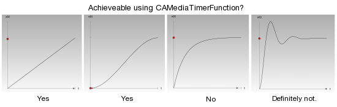
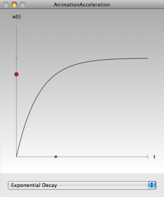

Please note: this article is part of the older "Objective-C era" on Cocoa with Love. I don't keep these articles up-to-date; please be wary of broken code or potentially out-of-date information. Read "A new era for Cocoa with Love" for more.
Parametric acceleration curves in Core Animation
CAMediaTimerFunction is used to control basic acceleration along a path in Core Animation but is very limited in what in can do. In this post, I look at the mathematics behind CAMediaTimerFunction and present a sample application that simulates some functions that CAMediaTimerFunction can't achieve by using parametric CAKeyframeAnimation values.
Introduction
If you animate an object along a straight line in Core Animation, you can have the object move at a constant speed along the whole path or you can specify that the object accelerate up to speed at the beginning and decelerate to a halt at the end (ease-in/ease-out). The class CAMediaTimerFunction specifies this behaviour.
If you want something quite different, like exponential slow-down along the path, then sadly, CAMediaTimerFunction can't do that. Furthermore, you can't subclass CAMediaTimerFunction to modify its behavior. We can still perform exponential slow-down in Core Animation but we'll need to do it a different way.
These graphs are screenshots from the "AnimationAcceleration" sample app (described below). It can handle all of these acceleration types.
The mathematics of ease-in/ease-out animation
In Core Animation, the animation classes derived from CAAnimation allow you to set the timingFunction (a CAMediaTimerFunction object). The primary purpose of this property is to allow you to control the "smoothness" of the animation at the endpoints (linear speed or ease-in/ease-out).
CAMediaTimerFunction uses a cubic Bézier to convert input time values into output time values. The documentation doesn't make it explicitly clear how the Bézier is used to map time values. So let's look at that first.
A cubic Bézier is described by the parametric equation:
F(t) = (1 - t)<sup>3</sup>P<sub>0</sub> + 3t(1 - t)<sup>2</sup>P<sub>1</sub> + 3t<sup>2</sup>(1 - t)P<sub>2</sub> + t<sup>3</sup>P<sub>3</sub>where the Bézier is specified by the four control points P0, P1, P2 and P3 (each of which is a pair of coordinates — an X and a Y coordinate) and the parameter "t" moves from zero at P0 to one at P3 (i.e. t ∈ [0, 1]). The whole function produces an output point F for every t value (where F contains an X and a Y coordinate like each of the P values).
CAMediaTimerFunction does not use the input time as the "t" value in this equation. Instead, input time is used as the X value of F and the output time is obtained by solving for the Y value of F at the same "t" point. This is more flexible than using "t" as the input value but is more computationally complex since you must solve the cubic.
Things CAMediaTimerFunction can't do
Since it uses a cubic Bézier, CAMediaTimerFunction can only provide time mappings that can be described by a 3rd-order polynomial.
This means the following are achievable:
- constant slope mappings
- quadratic mappings (parabolic)
- cubic mapping (including simple "s"-shaped curves)
but the following can't be achieved:
- exponentials
- sine waves
- polynomials higher than 3rd order
Solution: CAKeyframeAnimation
The CAKeyframeAnimation class lets us specify every single point along an animation path. If we generate enough keyframes, we can model any equation we want. In this way, we can overcome the limitations of CAMediaTimerFunction — we use flat linear time but distribute the keyframes to achieve the same effect.
To solve the problem, we'll need to recreate the parametric mapping nature of CAMediaTimerFunction but using any arbitrary mapping function that we choose.
Sample app: AnimationAcceleration
Download the "AnimationAcceleration" sample app. It is an XCode 3.1 project but should load correctly XCode 3.0 or later.
The sample application shows uses parametric functions to generate keyframes so that the red dot moves along its linear path (the vertical axis at the left of screen) at different rates of acceleration. The gray dot at the bottom moves at a constant speed, marking out time.
The acceleration curves used include
- Linear
- Achievable using CAMediaTimerFunction.
- Ease-in/Ease-out
- I've implemented this using a cubic Bézier mapping from "t" to X (to contrast with CAMediaTimerFunction's X of F to Y of F mapping). This acceleration uses the maximum amount of "t" to X ease-in/ease-out acceleration possible but is still weak compared with X to Y mapping — demonstrating why Apple went through the extra effort to provide X to Y mapping instead.
- Quadratic
- Achievable using CAMediaTimerFunction.
- Exponential Decay
- Cannot be achieved using CAMediaTimerFunction.
- Second-order Response Curve
- Technically, this curve models the voltage response of a second order circuit to a step change in voltage. I like it because it also produces a spring-like oscillation around the destination similar to damped harmonic motion. Since this curve actually overshoots the destination, it demonstrates a result that would be impossible in a bounded mapping function like CAMediaTimerFunction, even if subclassing CAMediaTimerFunction was possible.
In the program, each of the curves is described parametrically by an NSObject<Evaluate> object which implements the evaluateAt: method. The CAKeyframeAnimation subclass AccelerationAnimation then implements the following method to generate all the keyframe values using the results from this method.
- (void)calculateKeyFramesWithEvaluationObject:(NSObject<Evaluate> *)evaluationObject
startValue:(double)startValue
endValue:(double)endValue
interstitialSteps:(NSUInteger)steps
{
NSUInteger count = steps + 2;
NSMutableArray *valueArray = [NSMutableArray arrayWithCapacity:count];
double progress = 0.0;
double increment = 1.0 / (double)(count - 1);
NSUInteger i;
for (i = 0; i < count; i++)
{
double value =
startValue +
[evaluationObject evaluateAt:progress] * (endValue - startValue);
[valueArray addObject:[NSNumber numberWithDouble:value]];
progress += increment;
}
[self setValues:valueArray];
}The keyframe values generated by this method will work for single property animation (in this case, the "position.y" coordinate of the red dot). If you wanted to animate in two dimension (e.g. "position" instead of "position.y"), then you could implement a similar method that accepted startValue and endValue as NSPoints and performed similar parametric interpolation for the X and Y coordinates.
This animation is applied to the acceleratedDot (the red dot) layer as follows:
[CATransaction begin];
[CATransaction
setValue:[NSNumber numberWithFloat:2.5]
forKey:kCATransactionAnimationDuration];
AccelerationAnimation *animation =
[AccelerationAnimation
animationWithKeyPath:@"position.y"
startValue:[self originPoint].y
endValue:[self maxYPoint].y
evaluationObject:[currentConfiguration objectForKey:@"evaluator"]
interstitialSteps:INTERSTITIAL_STEPS];
[animation setDelegate:self];
[[acceleratedDot layer]
setValue:[NSNumber numberWithDouble:[self maxYPoint].y]
forKeyPath:@"position.y"];
[[acceleratedDot layer] addAnimation:animation forKey:@"position"];
[CATransaction commit];where the originPoint and maxYPoint methods return the two endpoints of the red dot's path. The destination point is applied using setValue:forKeyPath: so that the object will remain at the destination after the AccelerationAnimation completes.
Conclusion
Core Animation is heavily geared towards implicit animations that are simple point-to-point transitions — not a bad thing since this is the overwhelmingly common case.
Explicit animations along elaborate paths (in this case, elaborate along the time dimension) take significantly more code. You also must choose how many keyframes are required for a smooth path. However, parametric animation using CAKeyframeAnimation opens up any acceleration curve you want and you still gain the benefits of the rest of Core Animation (CALayer, separate animation thread, NSView integration, etc).
Application Design in AppKit
Drawing gloss gradients in CoreGraphics